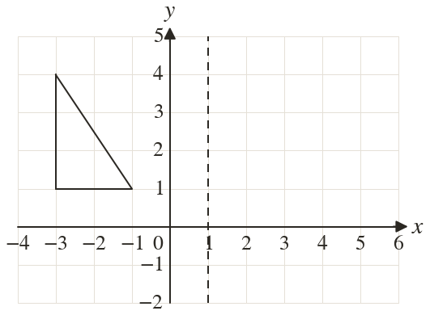
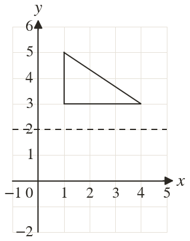
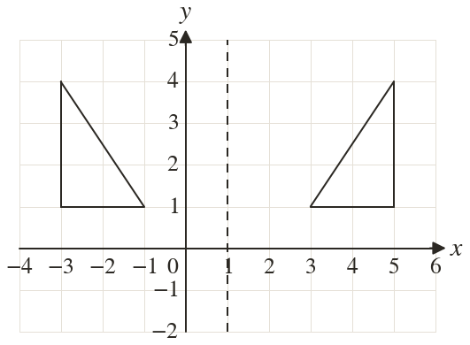
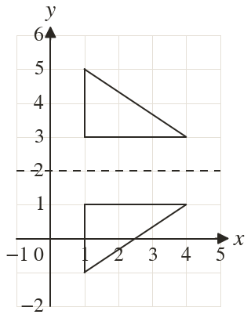

Westonbirt Maths · Coordinates, Graphs and Inequalities
Reflecting in Lines
Name: ______________________ Date: ____________
1
Reflect the triangle in the line
2
Reflect the triangle in the line
3
Reflect in the line
4
Reflect in the line
5
Reflect in the line
Ext
(a, is reflected in the line to give Find a.



